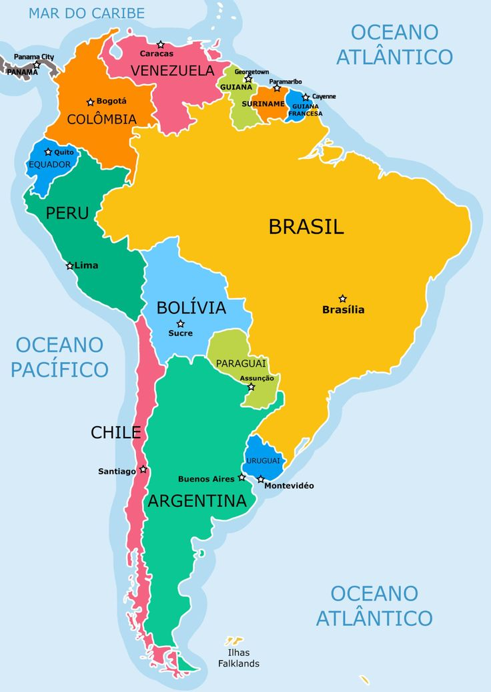
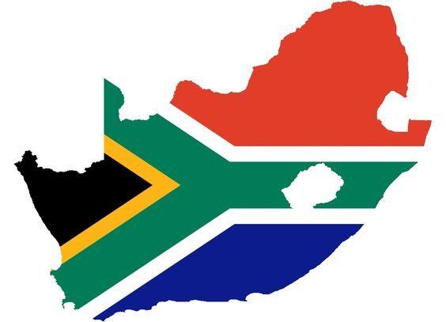
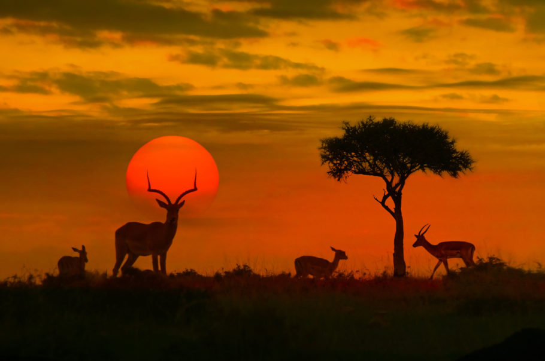

<!DOCTYPE html>
<html lang="en">
<head>
    <meta charset="UTF-8">
    <meta name="viewport" content="width=device-width, initial-scale=1.0">
    <title>Document</title>
</head>
<body>
    
</body>
</html>
<div align="center"> </div>
    <h1> COMPARAÇÃO ENTRE AFRICANO E AMÉRICA DO SUL </h1>
    <hr>
    
    
    <hr>
    <h2>História</h2>
    <p>a África e a América do Sul estiveram unidas no passado é antiga, datando da mesma época em que se produziram os primeiros mapeamentos desses continentes. Francis Bacon, estadista e filósofo inglês, já tinha defendido essa hipótese em 1620, entretanto, a teoria da deriva dos continentes, apoiada em conhecimentos geológicos, só foi proposta por Alfred Wegener em 1912.</p>

    <h2>Desastres Semelhantes</h2>

    <p>Entre os anos de 1970 e 2009, o mundo registrou 10.686 desastres naturais, que causaram 4.901.331 mortes, afetaram 6.921.541.146 pessoas e provocaram prejuízos, ainda que subestimados, da ordem de US$ 1,8 bilhão. Composto por 55 países e um território autogovernado [Saara Ocidental], o Continente Africano respondeu por 18,4% dessas ocorrências, 17,7% dos óbitos, 5,6% da população afetada e 1,3% das perdas econômicas.</p>
    <p>Em sua pesquisa, Lucí Nunes comparou os resultados obtidos para a África com os sistematizados por ela para a América do Sul, contidos em estudo realizado anteriormente. “Como a metodologia foi basicamente a mesma, considerei interessante confrontar os dados para identificar os pontos de convergência e as assimetrias entre as duas regiões”, esclarece. A primeira diferença está no número de países que compõem os dois territórios. O sul-americano soma 12 nações, mais a Guiana Francesa (Departamento Ultramarino da França) e as Ilhas Malvinas (possessão britânica). Esta última, porém, não foi considerada no estudo por causa da falta de informações.</p>
    <hr>
    
    
    <hr>
    <h2>Paisagens</h2>
    <p>A africa é banhada pelos oceanos Atlântico e Índico, possui um clima temperado, uma vegetação predominantemente seca e a presença de grandes animais selvagens. </p>
    <p>E a América do Sul, Devido a sua extensão gigantesca, a América do Sul reserva as mais variadas paisagens, que vão de desertos a geleiras eternas, sem falar dos vulcões, da Cordilheira dos Andes e da Floresta Amazônica. Os litorais, tanto dos oceanos Pacífico quanto do Atlântico, têm lindas praias.</p>
    <hr>
    
    
    <hr>
    <h2>Esta comparação de países é uma síntese concisa e tabular de numerosos dados de nossas respectivas páginas de países da África do Sul e do Brasil.</h2>
    <p> AFrica do Sul.
        Área:	1.219.090 km².
        Língua oficial:	Zulu, Xhosa, Afrikaans, Inglês, Sepedi, Setswana, Sotho, Tsonga, Swazi, Venda, Ndebele
        República Parlamentar
        Capital: Cidade do Cabo, Pretória, Bloemfontein
        América do Sul	.
        8.515.770 km²
        Português
        Forma de goveRNO: República Presidencial Federal.
        Capital:	Brasília</p>
        <hr>
        <p></p>